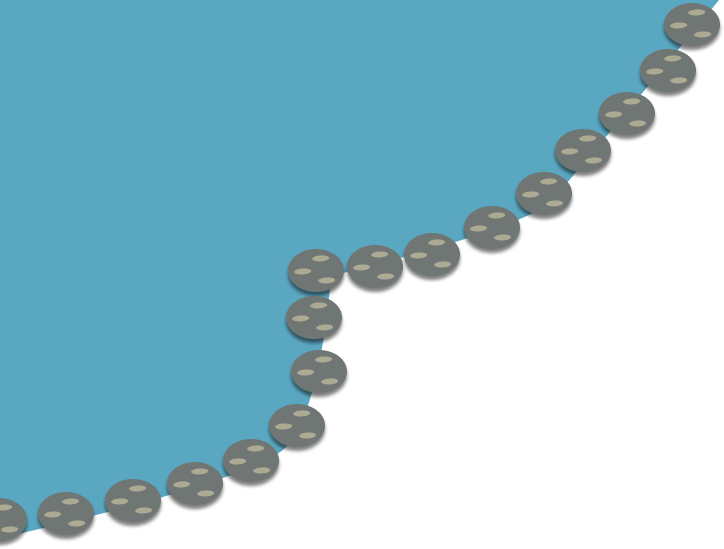
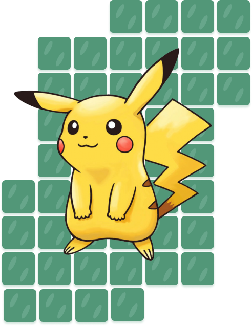
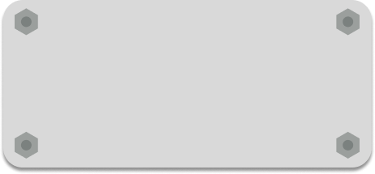

Welcome to the Pikachu fan page.
Pikachus are yellow mouse-like pokemons with brown stripes on their back and lightning-bolt shaped tails. Pikachus can generate electricity from their cheeks which they can use to fight or knock food from trees. Pikachu is evolved from the pokemon pichu upon sharing close friendship with a trainer. Pikachu can evolve to Raichu if it uses a Thunderstone. Female Pikachu have tails with a heart shaped end while males have pointy ends.
Things Pikachus love:
- Ketchup
- Strawberries
- Saying "Pika Pika"
Find out more about this cute pokemon on Wikipedia and on other Pikachu lover's sites like here!